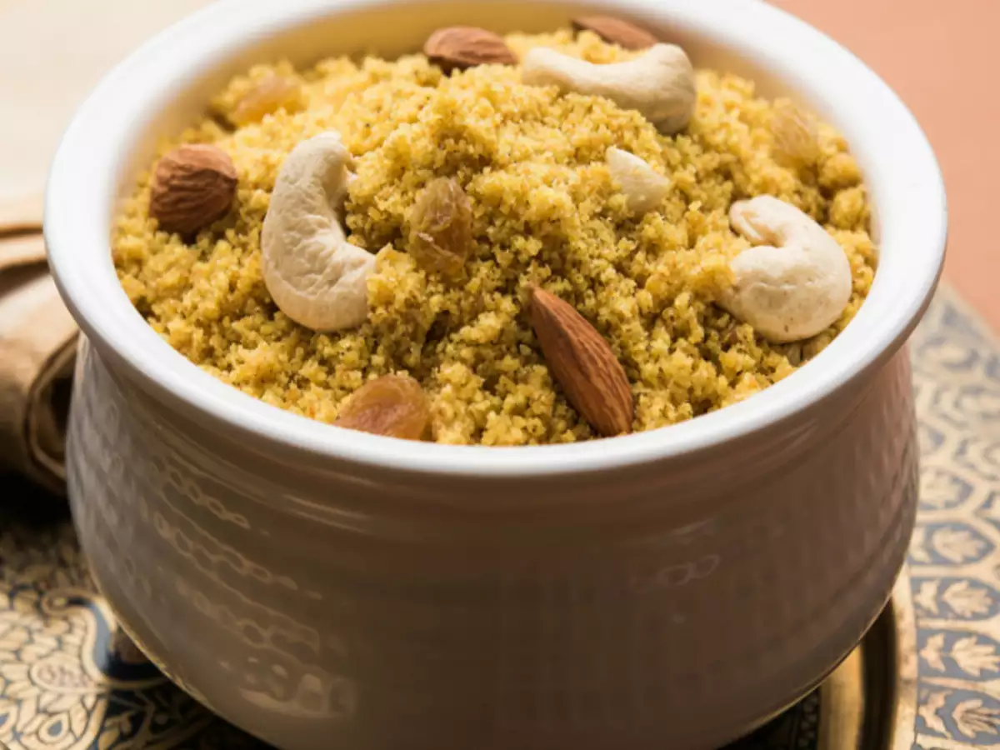

Churma

Description
Churma is a north Indian dish that is mainly prepared with various types of crumbled bread. It is especially popular in Rajasthan where it is made with
baati (bati) bread, and Haryana, where the locals opt for roti, paratha, or puri.
The fine crumbs are then mixed with ghee, sugar, cardamom, and (often) various nuts or, occasionally, dry fruits. The dish is usually finished off with
melted ghee. In Rajasthan, churma is mostly enjoyed as a part of a dish named dal bati churma—a delicious combination of churma, dal, and baati bread.
Churma can be enjoyed as a dessert, nutritious snack, or an accompaniment to savory dishes.
Ingredients
- 1 cup wheat flour
- 4 tablespoon semolina
- 10 tablespoon ghee
- 1 1/2 cup refined oil
- 1/2 cup powdered sugar
For Dough
milk as required
For Garnishing
4 tablespoon chopped mixed dry fruits
Steps
- Step 1 Prepare the Churma mixture:
To prepare this delicious churma recipe, take a large bowl and add wheat flour in it along with semolina. Mix well and then add 4 tablespoons of ghee in
the mixture, and crumble the mixture using your hands.
- Step 2 Add milk & knead a dough:
Next, pour milk in batches in the wheat-semolina mixture and knead into a dough. Once the dough is formed, cover with a cotton cloth and keep the dough
aside.
- Step 3 Divide the dough into small balls:
When the dough is hard enough, place it on a flat surface and divide into small equal parts in balls. Take a ball in your hand and press it lightly between
your palms to flatten a bit. Repeat the procedure to make more such flattened balls.
- Step 4 Deep fry the Churma balls:
Now, put a deep-bottomed pan on medium flame and heat oil in it. When the oil is hot enough, carefully drop churma balls in it in batches and deep fry
them.
- Step 5 Let the Churma balls cool:
When balls are crispy and golden brown in colour, turn off the burner and transfer them on a paper towel or an absorbent paper to absorb the extra oil.
Let these churma balls cool at room temperature for about 10 minutes till you are able to hold them.
- Step 6 Grind the Churma balls into a smooth powder:
Now, take a grinder jar and add the fried balls in it. Grind them all to get a smooth powder mixture.
- Step 7 Add ghee, powdered sugar & dry fruits to the Churma:
Take a large bowl and transfer the churma in it. Meanwhile, melt the remaining ghee and pour it over churma. Add the powdered sugar in the churma and mix
the ingredients well with a spoon. Garnish with dry fruits and serve immediately with dal bati!